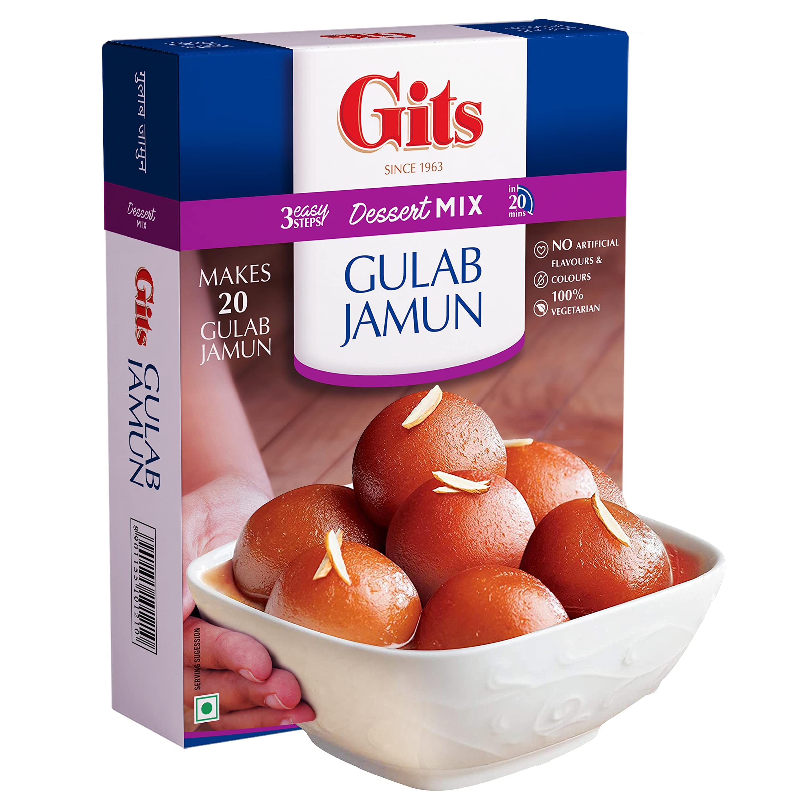

Gulab Jamun
Ingredients
- Nestlé MILKMAID
- Flour
- Grated Paneer
- Baking Powder
- Baking Soda
- Oil
- Water
- Sugar
- Crushed Cardamom
Recipe
- Prepare the dough by mixing milk powder, flour,
ghee, and milk. - Shape the dough into small, crack-free balls.
- Fry the dough balls until golden brown.
- Prepare a sugar syrup by boiling sugar and water.
- Soak the fried balls in the sugar syrup until they
absorb the sweetness.

Kaju Katli
Ingredients
- Cashew Nuts
- Sugar
- Water
- Ghee
- Cardomom Powder
Recipe
- Prepare the dough and shape it into small balls.
- Deep-fry the dough balls until they are golden
brown. - Prepare a sugar syrup.
- Soak the fried dough balls in the sugar syrup.
- Allow the Gulab Jamun to absorb the syrup and
serve.